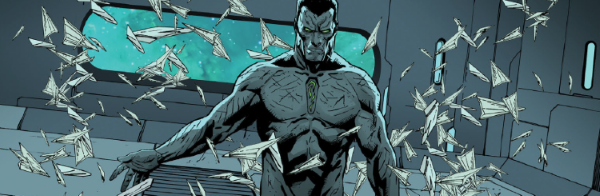

Pulp sci-fi blended with cyberpunk body-swapping as a man with alien eyes is remote-controlled by an alien agent who's being remote-controlled by the mind of a captive human remote-controlled by some aloof aliens.
Art by Karl Richardson
| Story Title | Parts | Pages | w indicates a wraparound coverCovers | Year(s) | Issues | Writer | Artist | Colourist | Letterer |
|---|---|---|---|---|---|---|---|---|---|
| Outlier | 10 | 53 | 1875: Karl Richardson 1 | 2014 | Reprints: M392 (supplement)1874-1883 | T.C. Eglington | Karl Richardson | <-- | Annie Parkhouse |
| Dark Symmetries | 10 | 52 | 1935: Karl Richardson 1939: Karl Richardson 2 | 2015 | Reprints: M393 (supplement)1935-1944 | T.C. Eglington | Karl Richardson | <-- | Annie Parkhouse |
| Survivor Guilt | 10 | 51 | 0 | 2016 | Reprints: M394 (supplement)1990-1999 | T.C. Eglington | Karl Richardson | <-- | Ellie de Ville |
| >> Teasers << | |||||||||
| No Longer Human… | 1 | 1 | 0 | 2013 | p2014 | n/a | Karl Richardson | <-- | n/a |
| >> Features << | |||||||||
| Previously on Outlier | 1 | 0.5 | 0 | 2016 | 1990 | editorial | Karl Richardson | <-- | n/a |
| year | episodes | pages |
| 2001 | 0 | 0 |
| 2002 | 0 | 0 |
| 2003 | 0 | 0 |
| 2004 | 0 | 0 |
| 2005 | 0 | 0 |
| 2006 | 0 | 0 |
| 2007 | 0 | 0 |
| 2008 | 0 | 0 |
| 2009 | 0 | 0 |
| 2010 | 0 | 0 |
| 2011 | 0 | 0 |
| 2012 | 0 | 0 |
| 2013 | 0 | 0 |
| 2014 | 10 | 53 |
| 2015 | 10 | 52 |
| 2016 | 10 | 51 |
| 2017 | 0 | 0 |
| 2018 | 0 | 0 |
| 2019 | 0 | 0 |
| 2020 | 0 | 0 |
| 2021 | 0 | 0 |
Comic strip data (excludes other content):